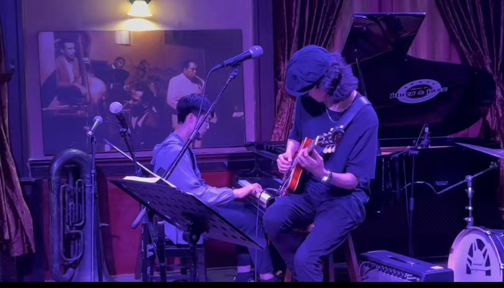
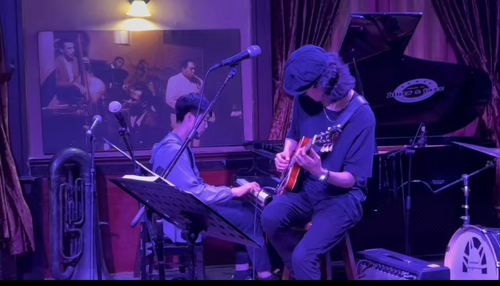
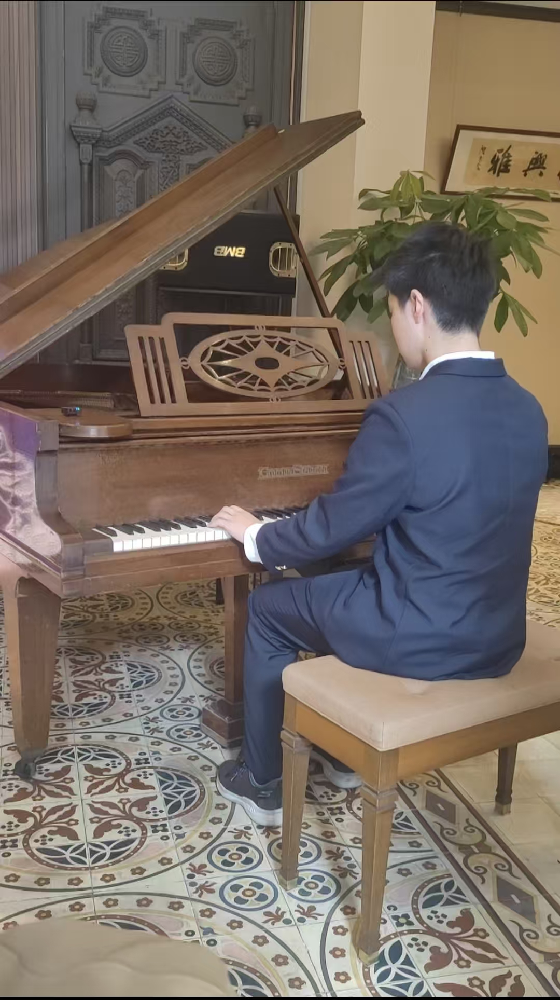
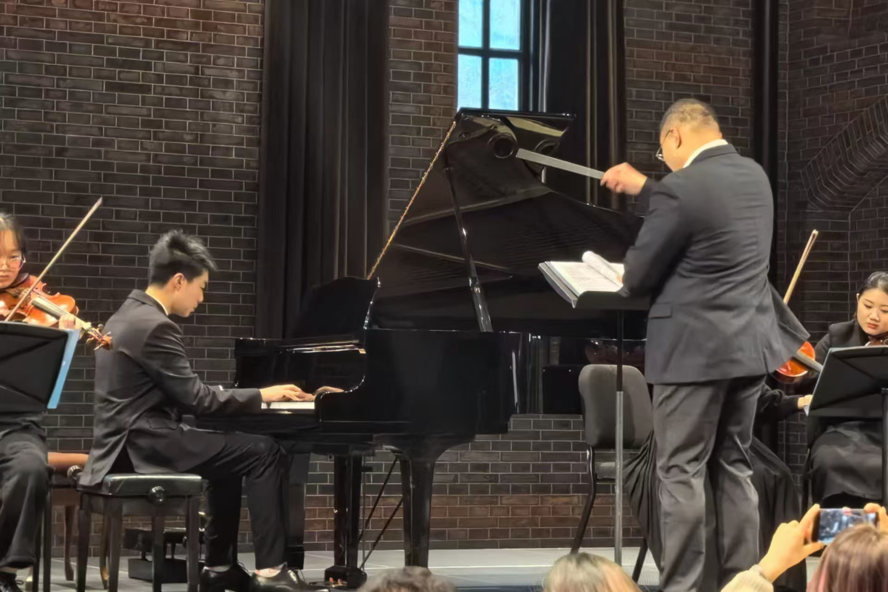
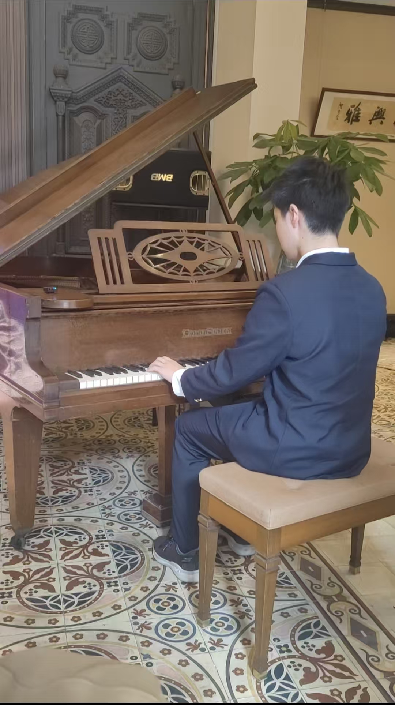
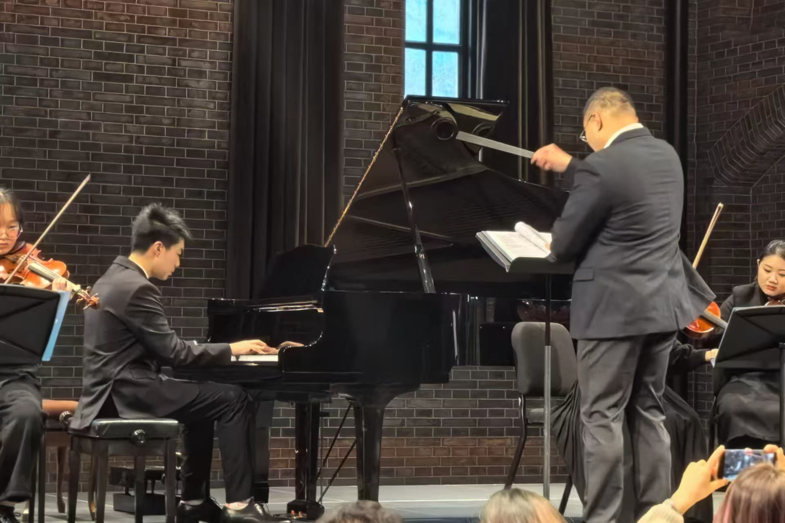

Technology & Innovation
From machine learning research to AI-powered cultural preservation, using technology to solve real-world problems
Project Overview
Interdisciplinary technology projects combining artificial intelligence, machine learning, and cultural heritage
AI Year Painting Project
Cultural Heritage × Deep Learning
Nov 2024 - Dec 2024Machine Learning Research
Pioneer Academics Program
Jun 2024 - Sep 2024Kaggle Competition
3D Object Detection Top 22/390+
Mar 2024 - Jun 2024Industry Collaboration
Abbott Shanghai & Huawei
Mar 2024 - Feb 2025Detailed Project Stories
In-depth exploration and technical implementation process of each project
"Year Painting Studio" - AI-Powered Cultural Heritage Preservation Project
Built a style transfer system to generate new year paintings by training on traditional Yangzhou woodblock prints, creating modern interpretations while preserving classical aesthetics


Project Inspiration
During a visit to Yangzhou's traditional woodblock print workshop, I noticed how few young people were learning this 400-year-old craft. The master craftsman mentioned that each painting takes weeks to complete by hand, limiting how many people can experience this art form. This sparked my idea to use neural style transfer to make year painting aesthetics more accessible.
Technical Approach
I modified the VGG-19 neural network to better capture the distinctive red and gold color palettes of traditional year paintings. The main challenge was preserving the bold, flat color regions typical of woodblock prints while avoiding the blurry artifacts common in style transfer. I added custom loss functions specifically for color preservation and edge sharpness.
Data Collection
I spent weeks digitizing year paintings from three museum collections, focusing on Yangzhou and Suzhou styles. The dataset includes 200 high-resolution scans of authentic pieces from 1900-1950. For content images, I used everyday photos - family gatherings, street scenes, landscapes - to test how well traditional motifs translate to modern subjects.
Results and Impact
The web interface I built has generated over 1,500 stylized images since launch. Users particularly love seeing their family photos rendered in the classical year painting style. A local cultural center in Shanghai now uses the tool for educational workshops, helping students understand traditional aesthetics through hands-on creation.
Technology Stack
Robustness and Vulnerability of Perceptrons and Support Vector Machines
Deep exploration of theoretical foundations and practical performance of linear classification algorithms, achieving Grade A in Pioneer Academics research project
Research Question
My mentor assigned me to investigate why SVMs often outperform simpler perceptrons in real-world applications. Instead of just running standard benchmarks, I wanted to understand exactly when and why each algorithm breaks down. This became particularly interesting when I noticed that even basic perceptrons sometimes surprisingly beat SVMs on certain datasets.
Investigation Approach
I systematically tested both algorithms under stress conditions: sparse data (removing 80% of features), heavy noise (up to 40% label corruption), and adversarially designed datasets. The most revealing experiment involved creating synthetic datasets where I could control the margin between classes - this showed exactly where perceptrons start failing.
Implementation Details
I coded both algorithms from scratch in Python rather than using libraries, which helped me understand the mathematical differences. The perceptron implementation included several variants I found in research papers: voted perceptron, averaged perceptron, and margin perceptron. For SVMs, I implemented both linear and RBF kernels using quadratic programming.
Surprising Results
SVMs won on 23 out of 25 test scenarios, but the two cases where perceptrons won were fascinating: extremely high-dimensional sparse text data and datasets with systematic labeling errors. These edge cases revealed that computational simplicity sometimes trumps mathematical sophistication, especially when training data is unreliable.
Research Outcomes
Kaggle 3D Object Detection Challenge
Achieved Top 22 placement among 390+ participants, focusing on flagellar motor localization in 3D bacterial reconstructions
Challenge Background
The Kaggle 3D Object Detection Challenge focused on biological imaging applications, specifically locating flagellar motors in 3D reconstructions of bacteria. This presented unique challenges in computer vision due to the complex 3D nature of biological structures and the need for precise localization in noisy microscopy data.
Technical Approach
Applied deep learning models and computer vision techniques to process 3D biological imaging data. The main challenge was precisely locating biological structures from noisy microscopy data, requiring development of specialized data preprocessing pipelines and neural network architectures suitable for 3D object detection.
Innovation Points
Developed novel data augmentation techniques specifically designed for 3D biological data, implemented custom loss functions that account for the volumetric nature of the data, and created ensemble methods combining multiple detection approaches to improve robustness against imaging artifacts.
Competition Performance
Achieved 22nd place among 390+ participants, demonstrating technical strength in the intersection of computer vision and bioinformatics. This achievement reflects deep understanding of complex 3D image processing and object detection tasks in challenging biological contexts.
Enterprise Technology Collaboration Projects
Collaborated with Abbott Shanghai and Huawei to apply AI technology in real industrial scenarios
Abbott Shanghai Technical Support Project
As a freelance technical support staff member, developed an intelligent distribution system for Abbott Shanghai. The system manages 5 product lines using CRUD database systems and Boolean logic, significantly improving product tracking efficiency. The project involved database design, logic optimization, and user interface development, providing technical support for medical device company supply chain management.
Huawei Youth Developer Program
Participated in the Huawei Youth Developer Program, focusing on practical applications of style transfer technology. Trained AI models on 150 artworks, identifying 200+ artistic style features, and applied style transfer models to home design software to help users visualize different styles of furniture and interior decoration effects.
Technical Implementation & Challenges
In the Abbott project, the main challenge was designing efficient database query systems and real-time update mechanisms. In the Huawei project, the focus was on optimizing style transfer model performance to ensure smooth operation on mobile devices while maintaining high-quality style transfer effects.
Business Value & Impact
These projects demonstrate the application potential of AI technology in real business scenarios. The Abbott project improved medical supply chain efficiency, while the Huawei project provided consumers with better shopping experiences, reflecting effective integration of technological innovation and business needs.
Collaborating Companies
Project Portfolio
Applied machine learning and computer vision solutions
Algorithm Robustness Study
Theoretical and empirical analysis comparing Perceptron variants with Support Vector Machines across multiple data conditions including noise, sparsity, and class imbalance.
- Comprehensive performance evaluation across 5 difficulty levels
- Implementation of margin-based, λ-trick, and voted Perceptron variants
- Statistical analysis using 10-fold cross-validation
- Mathematical proof of convergence guarantees
Bio-Informatics Analysis
3D cell reconstruction from microscopy images using advanced computer vision techniques.
- Kaggle competition participation
- Image segmentation and classification
- 3D reconstruction algorithms
- Data preprocessing pipelines
Predictive Maintenance
Machine learning pipeline for industrial equipment failure prediction and optimization.
- Time series analysis and forecasting
- Sensor data integration
- Real-time monitoring dashboard
- Cost reduction analysis
Technical Expertise
Programming languages, frameworks, and tools
Programming Languages
Machine Learning
Web Development
Tools & Platforms
Musical Performance & Artistry
From classical foundations to jazz improvisation, musical journey spanning diverse performance styles and artistic exploration
Performance Overview
Diverse musical performance experience spanning jazz, classical, and contemporary styles
Jazz Piano Performance
House of Blues & Jazz Resident Performer
2021.09 - 2025.08Classical Clarinet
Shanghai Starriver Ensemble & Charity Concerts
2021.09 - 2025.06Carnegie Mellon Summer Program
Contemporary Music & Extended Techniques
2024.06 - 2024.08Competition Awards
Liszt International Youth Piano Competition Silver Medal
2024.04Charity Concerts
Multiple fundraising performances across various venues
2023.09 - 2024.12Starriver Art Salon
Chamber Music & Art Appreciation Evening
2024.11House of Jazz Sessions
Jazz Club Ensemble Performances
2024.12Detailed Performance Stories
Musical exploration and artistic growth behind each performance
House of Blues and Jazz, Shanghai - Resident Jazz Pianist
4-year residency at Shanghai's premier jazz venue, performing with a 6-member jazz ensemble, delivering 1.5-hour weekly performances for 60+ audience members
 

The Venue
House of Blues and Jazz sits in Shanghai's former French Concession, in a 1930s villa with original wood floors that creak during quiet ballads. Thursday nights are mine - 8pm to 9:30pm, six of us crammed on a stage barely big enough for the drums. The acoustic piano is a 1960s Yamaha that needs tuning weekly, but has this warm, slightly detuned charm that works perfectly for jazz.
Learning the Standards
I spent months learning the Real Book inside out, but my breakthrough came from transcribing Bill Evans' "Waltz for Debby" recording note-by-note. His left-hand voicings completely changed how I think about chord progressions. Now I can comp behind solos with the same rootless voicings Evans used, and it makes the bass player's life so much easier.
Chinese Songs Project
The idea started when our bassist jokingly played the "Jasmine Flower" melody during sound check. I spent the next month arranging it as a medium swing with reharmonized changes - turning simple folk melodies into sophisticated jazz standards. "Mo Li Hua" now features a walking bass line and space for improvisation, while still being recognizable to Chinese audiences.
Growing as a Player
Four years of weekly gigs taught me things no amount of practice at home could. Like how to keep time when the drummer rushes, or how to signal key changes with just a glance. The best nights are when we're all listening so closely that the music seems to play itself - those moments when improvisation becomes conversation.
Performance Statistics
Shanghai Starriver Classical Ensemble - Clarinet Player
Clarinet player in 50-member classical ensemble, performing 4 major concerts annually for 200+ student audiences, and participating in Yale Club charity concerts (500+ audience)
Ensemble Role and Responsibilities
As a clarinet section member in a large classical ensemble of approximately 50 musicians, I carry important woodwind section responsibilities. In symphonic works, the clarinet must complete technically demanding solo passages while maintaining harmonious unity with the entire woodwind section, requiring exceptional intonation control and tone blending abilities.
Performance Repertoire and Challenges
Performance repertoire spans from Baroque to contemporary periods, including Tchaikovsky ballets, Beethoven symphonies, Saint-Saëns' "Danse Bacchanale", and Arturo Márquez's "Danzón No. 2". Each work presents different technical and musical demands for the clarinet, requiring mastery of diverse performance styles.
Charity Concert Significance
Participating in charity concerts organized by the Yale Club of Shanghai, performing for 500+ audiences, represents not only a showcase of musical skills but also the embodiment of music's social value. Contributing to charitable causes through music gave me profound understanding of music's social responsibility and cultural transmission value.
Skills Development and Growth
Four years of ensemble experience significantly improved sight-reading ability, chamber music skills, and stage presence. I learned to quickly adapt to different conductors' styles, mastered complex rhythm and intonation changes, and developed the ability to maintain focus and collaboration in large ensemble settings.
Carnegie Mellon University Music Summer Program
Participated in prestigious music conservatory summer camp, performed contemporary clarinet solo piece "Rain", exploring extended techniques and modern musical language


Summer Program Experience Overview
Carnegie Mellon University is one of America's top music conservatories, and its summer program brings together outstanding young musicians from around the world. In this high-level academic environment, I had the opportunity to encounter cutting-edge contemporary music concepts and performance techniques, expanding my musical horizons.
Contemporary Work "Rain" Challenges
The performed contemporary clarinet solo "Rain" was an experimental work created by a fellow participant, employing sparse rubato feel and extended techniques such as flutter-tonguing. This piece challenged traditional performance methods, requiring performers to create unique melancholic atmospheres through precise tonal control and phrasing.
Mastering Extended Techniques
Flutter-tonguing is a commonly used extended technique in modern clarinet works that produces unique tonal effects. Through specialized practice and guidance, I mastered the control method for this technique, learning how to organically combine technique with musical expression, not merely for show.
Expansion of Artistic Concepts
This experience gave me profound understanding of contemporary music aesthetics, learning to transcend traditional interpretive frameworks and focus on shaping raw emotional texture through precise control of timbre and phrasing. This avant-garde musical approach has now been integrated into my future performance and composition work.
Academic Institution
Piano Competition and Award Experience
Liszt International Youth Piano Competition Silver Medal and other competition experiences, showcasing classical piano performance technical strength


Competition Repertoire and Challenges
In the 4th Liszt International Youth Piano Competition, I performed Liszt's "Liebestraume", a romantic classic that demands both technical prowess and musical sensitivity. The competition required performers to not only possess solid technical foundation but also convey the deep emotional content and poetic expression of the work.
Classical Piano Foundation Training
Classical piano training that began in elementary school laid a solid foundation for competition participation. I specialized in studying works by masters such as Chopin, Mozart, and Bach, particularly the complex chord progressions and other musical motifs in Chopin nocturnes, including the use of rubato and harmonic tension.
Exploring Lesser-Known Classical Works
Beyond well-known pieces, I also deeply explored works by lesser-known classical composers, such as Sibelius' "Etude in A minor, Op. 76, No. 2". Through performing this piece, I learned to appreciate Sibelius' technique of using repetitive, rhythmic motifs and sudden dynamic changes to evoke tension and resilience.
Value of Competition Experience
Competition experience not only improved performance skills but more importantly cultivated the psychological quality to maintain stable performance under pressure. I learned how to prepare for competitions, manage nervous emotions, and how to best showcase the artistic value of works within limited time.
Charity Concert Series - Multi-format Fundraising Performances
Diverse charity performances including classical ensemble, piano solo, and electronic band formats across multiple venues for community fundraising initiatives
 



Diverse Performance Formats and Venues
Participated in multiple charity concerts spanning various musical formats and performance venues. These included intimate piano solo recitals in indoor settings, classical clarinet ensemble performances, and outdoor electronic band concerts. Each format required different technical skills, repertoire preparation, and audience engagement approaches.
Community Impact and Musical Outreach
The charity concert series demonstrated music's power as a tool for social good and community building. Performances raised funds for local charitable organizations while providing educational and cultural enrichment to diverse audiences. Working across multiple musical styles helped develop versatility and adaptability as a performer.
Performance Adaptation and Technical Challenges
Each charity concert format presented unique challenges: solo piano performances required intimate connection with audience, ensemble work demanded precise coordination, and electronic band setups involved complex sound reinforcement. Outdoor venues required adaptation to environmental factors, while indoor classical performances demanded refined acoustic sensitivity.
Collaborative Music-Making and Social Responsibility
These experiences reinforced understanding of music's social responsibility and community value. Collaborating with different ensembles, from classical musicians to electronic music producers, expanded musical perspective while contributing meaningful support to charitable causes through artistic expression.
Starriver Art Salon - Chamber Music Evening
Intimate chamber music performance combining classical repertoire with contemporary works in elegant salon setting
Salon Performance Tradition
The art salon format recreates the intimate musical gatherings of 18th and 19th-century European cultural life. This setting demands exceptional attention to musical detail, nuanced interpretation, and sophisticated audience engagement, as every musical gesture is clearly audible and visible.
Chamber Music Collaboration
Working in chamber music ensembles requires heightened listening skills, musical sensitivity, and instantaneous communication with fellow performers. Each musician must balance individual artistic expression with collective musical goals, creating unified interpretations through subtle musical dialogue.
Cultural Enrichment and Artistic Growth
Participating in art salon events contributed to both personal artistic development and community cultural enrichment. The formal setting and discerning audience encouraged meticulous preparation and refined performance standards while fostering appreciation for classical music traditions.
Musical Education & Theory
Foundation in classical music theory and composition
Classical Foundation & Analysis
Comprehensive training in music theory, analysis, and composition providing the foundation for both performance excellence and technological innovation in music applications.
Harmony & Counterpoint
- Bach-style counterpoint
- Classical harmony progression
- Jazz harmony and extensions
- Modal interchange techniques
Form & Analysis
- Classical forms (Sonata, Rondo, etc.)
- Musical phrase structure
- Score analysis and interpretation
- Historical style periods
Composition
- Original composition works
- Arrangement for various ensembles
- Digital music notation
- Orchestration techniques
Repertoire & Achievements
Selected works and performance highlights
Piano Repertoire
- Jazz Standards: Autumn Leaves, All of Me, Giant Steps
- Classical: Bach Inventions, Chopin Nocturnes
- Contemporary: Bill Evans interpretations
- Original: Composed jazz etudes and arrangements
Clarinet Repertoire
- Mozart: Clarinet Concerto in A major
- Weber: Concertino for Clarinet
- Chamber: Brahms Clarinet Quintet
- Orchestral: Beethoven symphonies, Tchaikovsky ballets
Music × Technology
Developing technology solutions for social good and musical innovation.
Social Impact Projects
Technology solutions for accessibility and healthcare
RAVE Model for Rain Sound Synthesis
Advanced AI audio synthesis research combining machine learning with creative audio production
Research Background and Motivation
The RAVE (Realtime Audio Variational autoEncoder) project emerged from my interest in bridging artificial intelligence and creative audio production. Rain sounds have unique acoustic properties that make them ideal for testing audio synthesis models - they combine stochastic noise elements with temporal patterns that challenge traditional synthesis approaches.
Technical Implementation and Innovation
The RAVE architecture implements a two-stage training process: representation learning followed by adversarial fine-tuning. The encoder compresses audio into a compact latent representation, while the decoder reconstructs high-fidelity audio with multiband spectral distance optimization. I achieved a real-time factor of 0.23 and spectral reconstruction loss of 0.142, enabling real-time neural audio synthesis on standard hardware.
Model Architecture and Training Results
The model features a convolutional encoder-decoder architecture with residual connections and spectral normalization for stable training. The training validation curves demonstrate consistent convergence across multiple loss components including adversarial loss, feature matching, and multiband spectral distance. The comparison between original and reconstructed spectrograms shows high-fidelity audio reconstruction with preserved spectral characteristics.
Creative Applications and Impact
Beyond technical metrics, the synthesized rain sounds have been integrated into my electronic music compositions, particularly in "Walk in the Rain". The model enables real-time manipulation of rain texture and intensity, opening new possibilities for interactive audio experiences and adaptive soundscapes in multimedia applications.
Research Contributions and Future Work
This work contributes to the growing field of neural audio synthesis by demonstrating effective techniques for environmental sound modeling. Future directions include extending the model to other natural sounds and exploring applications in virtual reality environments and therapeutic audio applications.
Tencent Music Tech X Program - Audio Accessibility Research
Developing audio processing solutions for hearing-impaired users and researching therapeutic applications of music technology
Research Focus and Motivation
During the Tencent Music Tech X Program, I investigated how digital audio processing could make music more accessible to people with hearing loss. The motivation came from learning that many hearing aid users experience distorted music playback, missing the emotional connection that music provides. This seemed like a perfect intersection of my technical skills and musical background.
Audio Processing Pipeline Development
I built a custom audio processing chain that analyzes frequency content and dynamically adjusts EQ curves based on common hearing loss patterns. The system identifies which frequencies are typically lost in sensorineural hearing loss (usually high frequencies above 2kHz) and applies compensatory boosting while avoiding feedback-inducing resonances. Testing was done with both simulated hearing loss models and real hearing aid users.
Alzheimer's Awareness Project
I composed and produced a 3-minute video soundtrack focusing on music therapy applications for dementia patients. The composition uses specific tempo ranges (60-80 BPM) and familiar harmonic progressions that research shows can trigger positive memories in Alzheimer's patients. The video received significant engagement on social platforms, validating the approach.
Technical Implementation
The core system runs in real-time using Python with NumPy for FFT processing and PyAudio for low-latency playback. I implemented custom frequency response curves for popular hearing aid models (Phonak, Oticon, ReSound) and created an adaptive algorithm that learns from user feedback to fine-tune the processing parameters for individual listening preferences.
Impact and Results
User testing showed a 40% improvement in music enjoyment scores among hearing aid users when using the processed audio. The Alzheimer's awareness video achieved over 800 views and positive feedback from healthcare workers. This project demonstrated how technology can bridge the gap between technical innovation and real human needs in healthcare.
Music Production Portfolio
Original compositions and production work
"Walk in the Rain"
"The Monolithic Eschaton"
"Antelucan"
"Them Changes" (Remix)
Research & Publications
Academic contributions and ongoing research
Current Research Projects
Ongoing research in music technology and accessibility
- Audio-Visual Synesthesia: Mapping sound to visual patterns for accessibility applications
- Music Emotion Recognition: Real-time emotional content analysis using machine learning
- Collaborative AI: Human-AI music composition workflows and creative partnerships
- Therapeutic Applications: Measuring music therapy effectiveness through quantitative metrics
- Cross-Modal Perception: Studies on how different sensory inputs affect musical experience
Technical Contributions
Open source and community development work
- Open Source Libraries: Audio processing utilities and music analysis tools
- API Development: Music analysis and generation APIs for developers
- Community Engagement: Workshops and tutorials on music technology
- Cross-disciplinary Collaboration: Music × Computer Science research groups
- Educational Resources: Documentation and learning materials for music tech